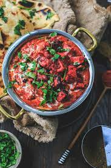

Paneer Tikka masala

Discription
Ingredients
- ¼ cup butter
- 1 pound paneer, cut into 1/2-inch cubes
- 2 onions, finely chopped
- 1 green bell pepper, chopped
- 2 jalapeno peppers, chopped
- 1 tablespoon ground cashews
- 1 teaspoon garlic paste
- 1 teaspoon ginger paste
- 1 teaspoon cayenne pepper
- 1 teaspoon ground cumin
- 1 teaspoon ground coriander
- 1 teaspoon garam masala
- 1 (16 ounce) can tomato sauce
- 1 pint half-and-half
- 1 teaspoon salt, or to taste
Directions
- Melt butter in a skillet over medium heat; cook and stir paneer until golden, about 5 minutes. Add onions, green bell pepper, jalapeno peppers, cashews, garlic paste, ginger paste, cayenne pepper, cumin, coriander, and garam masala to paneer; cook and stir until fragrant and evenly coated, about 1 minute.
- Mix tomato sauce, half-and-half, and salt into paneer mixture; simmer until thickened, about 30 minutes.